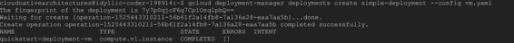
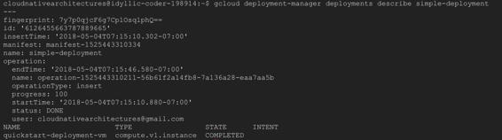
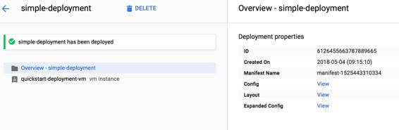

Infrastructure as code
Google Cloud offers a service that is very similar to AWS CloudFormation, called Google Cloud Deployment Manager, using which infrastructure components can be easily authored in a declarative fashion (YAML) to automate various provisioning and automation-related tasks. Therefore, using this, service you can create templates which can have multiple components of the application provisioned and deployed using a template.
For example, if you had a three-tier web application which is autoscaled and has load balancers in front of it, with a database for persistence, then instead of creating that manually every time you want to launch a new instance of the application, you could possibly write a YAML Cloud Deployment Manager template which can automate the entire process. To make it dynamic, you can also use template properties and environment variables in the template which can be supplied based on different individual launches. Test/Dev environments may have smaller fleet size, compared to production which has to be fully scalable.
There are a couple of other interesting features around template modules and composite types, which can help extend the functionality of Deployment Manager greatly. As part of the template modules, you can write helper files in Python or Jinja to perform specific functions, like generating unique resources names, and make your templates even more sophisticated. Using the same mechanism of leveraging Jinja or Python-based logic, you can create composite types, which is basically the ability to have one or more templates that are preconfigured to work together. As an example of a Composite type, you can create a type which is basically a specific configuration of a VPC network, which can be reused whenever you are creating a new set of application environments.
Refer to the following link for the latest supported resources with Cloud Deployment Manager: https://cloud.google.com/deployment-manager/docs/configuration/supported-resource-types.
Now, let's take a look at an actual sample and how that can be used to create resources in Google Cloud. To make it easy to get started, Google offers samples on GitHub and so we use a sample from there only to quickly get started and demonstrate the concepts. The following is the link to this sample, which basically creates a virtual machine in a specific Google Cloud project: https://github.com/GoogleCloudPlatform/deploymentmanager-samples/blob/master/examples/v2/quick_start/vm.yaml.
As also mentioned in the notes of this template, remember to update the placeholders for your project id will be MY_PROJECT, as well as instance family name: FAMILY_NAME, to properly provision sample instance using Deployment Manager.
One of the quickest ways to do this is by using Google Cloud Shell, which comes with pre-installed gcloud (CLI) and so requires minimal configuration. As in the following screenshot, we used the sample template to provision the resources and the command was completed successfully:

Post the successful creation of your resources, you can also use the gcloud CLI to describe the created resources, as follows:

Apart from using the gcloud CLI, you can also use the Google Cloud Console and go to the Cloud Deployment Manager section and look at the same deployment to get more details by clicking on various sections and links, as follows:
